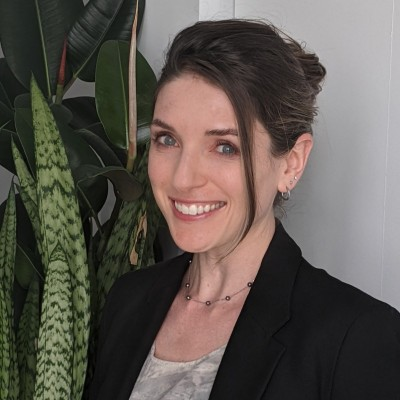

Jessica Polka, PhD
Jessica Polka is a cell biologist who has spent her career working to make science communication more rapid and open. After a PhD at UCSF and a postdoc in synthetic biology at Harvard Medical School, she cofounded ASAPbio, a nonprofit promoting preprints and open peer review, which she led for eight years. She later served as Astera's Open Science Program Director.
As a Resident, Jessica is building Ringtest, an independent benchmark for peer review in biomedicine. Ringtest gives AI systems and human reviewers the same test cases, helping researchers and infrastructure providers choose tools that catch real errors without adding new ones, like prestige bias. Her longer-term goal is strong, inexpensive review at every stage of research, from study design to reading the literature.
Work & Research
Ringtest
Open Science Resident, Astera Institute (2026 – present). Building an independent benchmark for peer review in biomedicine, giving AI systems and human reviewers the same test cases.
ringtest.orgMIT Open Learning
Senior Program Lead (2025 – 2026). Worked on initiatives that broaden access to education and strengthen the open knowledge ecosystem.
MIT Open LearningAstera Institute
Open Science Program Director (2024 – 2025). Supported entrepreneurs building new technologies for openly sharing knowledge.
Astera Open ScienceASAPbio
Co-founder and Executive Director (2016 – 2024). Led a researcher-driven nonprofit to advance preprints and open peer review in the life sciences.
ASAPbio